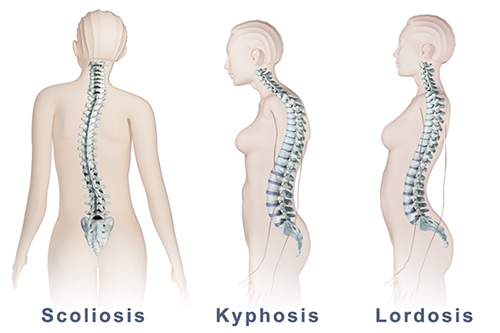

Javlja se usljed nedovoljnog taloženja kalcijuma u kostima, u djetinjstvu. Zbog nedovoljne mineralizacije kosti nijesu dovoljno čvrste i krive se, naročito one koje nose težinu tijela. Rahitis je najčešće posljedica nedostatka vitamina D, jer je ovaj vitamin neophodan za odlaganje kalcijuma. Pojava rahitisa sprečava se pravilnom ishranom, unošenjem vitamina D, kao i boravkom na suncu, jer se pod uticajem sunčevih zraka u koži sintetiše vitamin D.
U doba intezivnog rasta zbog nepravilnog držanja tijela može doći do krivljenja kičme. Krivljenje kičme u stranu naziva se skolioza, a čest deformitet je i kifoza-pogrbljenost. Deformiteti mogu nastati i kao posljedica rahitisa. Bavljenjem sportom i pravilnim držanjem tijela mogu se spriječiti deformiteti kičme.
Ravni tabani su deformitet stopala kod kojega je spušten svod, što otežava hodanje i izaziva niz problema vezanih za skelet. Pojava ravnih tabana može se korigovati nošenjem cipela sa odgovarajućim uloškom.
Pri radu ili nezgodnom poretu zglob se može iščašiti. Tada se pokidaju zglobne veze i jabučica iskoči iz zglobne čašice. Iščašeni zglob boli, a javlja se i otok. Potrebno je obratiti se ljekaru, koji će zglob vratiti u pravi položaj.